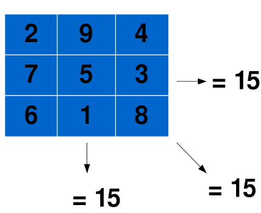

Bienvenue dans le monde merveilleux de la programmation par contraintes. Ici on déclare simplement notre problème et notre cher ordinateur trouve les solutions tout seul :waw: ! Dans ce court tutoriel, vous allez pouvoir résoudre un problème en utilisant des contraintes. Pour suivre correctement, savoir parcourir un tableau avec une boucle est tout ce dont vous avez besoin. Le C++ n'est pas important ici (connaître soit le C, soit le C++ peut cependant aider).
Pour commencer, il va nous falloir un outil pour la programmation par contraintes. Je vous propose d'utiliser Gecode, une bibliothèque C++ libre et gratuite.
Sous windows
On commence par installer Visual Studio C++ et Gecode.
Pour compiler l'exemple que je vais présenter juste après, deux commandes magiques dans l'invite de commande windows feront l'affaire :
Et vous aurez un exécutable tout neuf à tester :magicien: .
Sous unix (Linux et Mac OS X)
Pour installer Gecode sous Mac OS X, c'est par ici. Sous linux, commencez par vérifier si le paquet n'est pas disponible (sous Archlinux, il l'est). Si ce n'est pas le cas, je vous invite à suivre les instructions sur le site de Gecode pour compiler la bibliothèque à partir des sources (c'est en anglais, envoyez moi un message si vous avez un problème).
Pour la compilation voici un makefile à placer dans le dossier ou se trouvera le code à compiler. Ensuite dans un terminal, la commande 'make' fera le boulot à votre place :) .
C'est ici que les choses sérieuses commencent :pirate: ! Pour vous présenter la programmation par contraintes, il nous faut un problème à attaquer. Nous allons résoudre des carrés magique, un petit problème qui peut être très long à résoudre. Le but est de remplir un tableau carré de nombres en respectant certaines règles.
Les nombres de 1 jusqu'au nombres de cases du tableau doivent tous apparaître une fois. Pour un carré de taille 3 il faudra donc placer les nombres de 1 à 9.
La somme des nombres sur chaque ligne, colonne et grande diagonale du tableau doit être la même.
C'est tout :D !
Voici un exemple résolu pour un carré de taille 3 :

Prenez le temps de vérifier que je n'ai pas fait de bêtises, toutes les sommes concernées doivent être égale à 15 ! Bon maintenant, pour comprendre que la programmation par contraintes va nous être utile, essayez de résoudre un carré magique de taille 10. N'essayez pas trop longtemps quand même :-° .
Nous y voici, nous y voilà ! Pour avoir un programme complet avec Gecode, il va nous falloir plusieurs éléments : les données du problème puis les contraintes qui vont avec.
Les données du problème
En fait, pour les carrés magiques, la seule chose qu'on connait est la taille du carré qu'on doit remplir. Donc ici les données du problème se résument à un simple entier supérieur ou égal à 1 !
Les contraintes
Oui, j'en parle beaucoup depuis le début et elles arrivent enfin ! Elles vont en fait nous permettre d'expliquer à la bibliothèque Gecode ce qu'est notre problème. Nous devons exprimer nos contraintes sur des variables. Ces variables doivent être définies par leurs types et leurs domaines.
Les variables
Pour les carrés magiques on devrait donc commencer par dire qu'on se place sur un tableau d'entiers carreMag de taille n*n, chaque entier ayant pour domaine les nombres de 1 jusqu'au nombre de cases du tableau (soit n*n). Le domaine d'une variable est l'ensemble des valeurs qu'elle peut prendre. Dans un carré magique, chaque case peut contenir chaque nombre, tant qu'on a pas commencé à le résoudre. Donc ici les variables de notre tableau doivent bien avoir comme valeurs possibles tout les nombres de 1 à n. Nous avons également besoin d'une variable entière s qui sera la somme commune de chaque ligne, colonne et grande diagonale du carré.
Mais on lui met quoi comme domaine à cette somme :euh: ?
Ah ! Justement j'y venais :) . Nous n'avons pas besoin d'être très précis dans le domaine que l'on donne à une variable. C'est un des but de la programmation par contraintes : laisser le programme faire le boulot ! Ici, on sait que la somme sera au minimum 1 et au maximum il y aura n fois le nombre n*n, donc n*n*n en tout. Même si on peut donner un domaine bien plus restreint en se creusant un peu plus la tête, nous n'en avons pas besoin. Si jamais notre programme s'avère trop lent, nous pourrons affiner tout cela. L'important c'est d'avoir une base solide et simple.
Les contraintes
Maintenant que nous avons nos variables, il va falloir les contraindres. Le tableau carreMag devra avoir toutes ses cases disctintes les unes des autres. Les lignes, colonnes et grandes diagonales du carré devront avoir pour somme s. Et voilà, nous avons tout ce qu'il nous faut ! On passe au code et à son explication maintenant :D .
Je vais expliquer ici pas à pas le code pour résoudre notre problème, et vous allez vous apercevoir que tout le boulot fait à la partie précédente va porter ses fruits :soleil: . Pour ceux qui veulent le tester d'abord, le code entier est à la fin de cette partie.
On commence par quelques includes et déclarations de variables de classes :
#include <gecode/driver.hh>
#include <gecode/int.hh>
#include <gecode/minimodel.hh>
using namespace Gecode;
class CarreMagique : public Script {
private:
const int n;
IntVarArray carreMag;
On peut remarquer la syntaxe de Gecode pour un tableau de variables entières, IntVarArray.
Puis viens ensuite le principal morceau, le constructeur dont voici le début :
La seule chose intéressante ici est carreMag(*this,n*n,1,n*n) , qui dit, dans l'ordre, que carreMag est de taille n*n, chacune de ses variables ayant un domaine de 1 à n*n. Comme nous l'avions modélisé dans la précédente partie !
Ensuite on déclare la variable s et on utilise une fourberie de Gecode pour accéder au tableau comme on le ferais pour une matrice.
// Somme de chaque ligne, colonne et grande diagonale
IntVar s(*this, 1, n*n*n);
// Pour acceder au tableau comme à une matrice
Matrix<IntVarArray> m(carreMag, n, n);
Et voici maintenant les contraintes :
// Les lignes et colonnes doit avoir comme somme s
for (int i = 0; i < n; i++) {
linear(*this, m.row(i), IRT_EQ, s);
linear(*this, m.col(i), IRT_EQ, s);
}
// Les deux grandes diagonales doivent avoir comme somme s
{
IntVarArgs d1(n);
IntVarArgs d2(n);
for (int i = 0; i < n; i++) {
d1[i] = m(i,i);
d2[i] = m(n-i-1,i);
}
linear(*this, d1, IRT_EQ, s);
linear(*this, d2, IRT_EQ, s);
}
// Toutes les cases doivent avoir une valeur différente
distinct(*this, carreMag);
On découvre ici la façon de déclarer des contraintes. linear(*this, m.row(i), IRT_EQ, s); indique que la somme des éléments de la ligne ("row" en anglais) i est égale à s. De même pour les colonnes et les diagonales. Enfin la dernière contrainte distinct(*this, carreMag); indique que toutes les variables du tableau carreMag doivent prendre des valeurs disctinctes les unes des autres. Plutot simple non :) ?
La ligne de code qui suit est importante :
// On cherche les solutions sur le carré
branch(*this, carreMag, INT_VAR_SIZE_MIN, INT_VAL_SPLIT_MIN);
Elle indique sur quelles variables le programme va chercher des solutions. Dans notre cas on veut résoudre le carré magique et c'est donc sur le tableau que l'on va effectuer les "branchements". Les deux autres arguments indiquent la méthode de branchement, ne vous y attardez pas.
Suivent des méthodes requises par Gecode, plus la fonction d'affichage du carré magique :
CarreMagique(bool share, CarreMagique& s) : Script(share,s), n(s.n) {
carreMag.update(*this, share, s.carreMag);
}
virtual Space* copy(bool share) {
return new CarreMagique(share,*this);
}
virtual void print(std::ostream& os) const {
// Pour acceder au tableau comme à une matrice
Matrix<IntVarArray> m(carreMag, n, n);
for (int i = 0; i < n; i++) {
os << "\t";
for (int j = 0; j < n; j++) {
os.width(2);
os << m(i,j) << " ";
}
os << std::endl;
}
}
Sachez simplement que votre programme a besoin de ces fonctions de mise à jour et de copie.
Rien de fou ici, opt.size(4); est la taille du carré magique à résoudre. Notre programme n'étant pas franchement optimisé, ne dépassez pas 6 sinon vous allez attendre longtemps avant la réponse ! Quant à la ligne Script::run<CarreMagique,DFS,SizeOptions>(opt); , c'est ici que tout commence ! Vous appelez ici le solveur, soit le programme qui essaye de satisfaire les contraintes et s'occupe de tout, en fait :magicien: .
Pour récapituler, voici le code en entier :
#include <gecode/driver.hh>
#include <gecode/int.hh>
#include <gecode/minimodel.hh>
using namespace Gecode;
class CarreMagique : public Script {
private:
const int n;
IntVarArray carreMag;
public:
CarreMagique(const SizeOptions& opt)
: n(opt.size()), carreMag(*this,n*n,1,n*n) {
// Somme de chaque ligne, colonne et grande diagonale
IntVar s(*this, 1, n*n*n);
// Pour acceder au tableau comme à une matrice
Matrix<IntVarArray> m(carreMag, n, n);
// Les lignes et colonnes doit avoir comme somme s
for (int i = 0; i < n; i++) {
linear(*this, m.row(i), IRT_EQ, s);
linear(*this, m.col(i), IRT_EQ, s);
}
// Les deux grandes diagonales doivent avoir comme somme s
{
IntVarArgs d1(n);
IntVarArgs d2(n);
for (int i = 0; i < n; i++) {
d1[i] = m(i,i);
d2[i] = m(n-i-1,i);
}
linear(*this, d1, IRT_EQ, s);
linear(*this, d2, IRT_EQ, s);
}
// Toutes les cases doivent avoir une valeur différente
distinct(*this, carreMag);
// On cherche les solutions sur le carré
branch(*this, carreMag, INT_VAR_SIZE_MIN, INT_VAL_SPLIT_MIN);
}
CarreMagique(bool share, CarreMagique& s) : Script(share,s), n(s.n) {
carreMag.update(*this, share, s.carreMag);
}
virtual Space* copy(bool share) {
return new CarreMagique(share,*this);
}
virtual void print(std::ostream& os) const {
// Pour acceder au tableau comme à une matrice
Matrix<IntVarArray> m(carreMag, n, n);
for (int i = 0; i < n; i++) {
os << "\t";
for (int j = 0; j < n; j++) {
os.width(2);
os << m(i,j) << " ";
}
os << std::endl;
}
}
};
int main(int argc, char* argv[]) {
SizeOptions opt("CarreMagique");
opt.size(4);
Script::run<CarreMagique,DFS,SizeOptions>(opt);
return 0;
}
Je vous invite à compiler tout ça et à l'exécuter ! Lorsque votre programme trouve une solution il l'affiche avec quelques statistiques en bonus. En voici un exemple pour un carré magique de taille 4 :
Le "runtime" est le temps que votre programme à mis pour trouver cete solution. Quand aux autres chiffres, plus ils sont grands, plus le problème spécifié dans votre programme est complexe à résoudre (oui, ici je vous cache des choses).
Pour les aventuriers
Ce code peut être amélioré de différentes façons. Par exemple, en faisant un peu de maths, on peut connaître la valeur de la somme s uniquement à partir de n, la taille du problème (voir wikipedia). Vous pouvez donc modifier le code donné pour changer le domaine de s, puis tester le changement en vous aidant des statistiques données par Gecode. Et si vous vous embêtez encore, essayer de coder un solveur de sudokus. C'est un des problèmes les plus simples qu'on peut résoudre en programmation par contraintes, et vous savez maintenant tout ce qu'il faut pour le programmer !
Eh bien, ce tutoriel touche à sa fin. Vous avez pu apercevoir une autre façon de programmer, où il suffit de déclarer les contraintes et appuyer sur "entrée" pour obtenir la solution ! Il vous reste à découvrir les mécanismes du solveur, ce que sont les branchements et tout ce que j'ai passé sous silence dans cette introduction.
P.S. : si vous êtes encore en train de me lire, tout commentaire, MP ou demande d'explications et de continuer ce tutoriel sont les bienvenus !